Meet 74 characters from KAOSTWINS and Stormfall, grouped by household, faction, region and role. Select a portrait to read their introduction. Discover their deeper stories in the adventure.
Royal household 5 characters 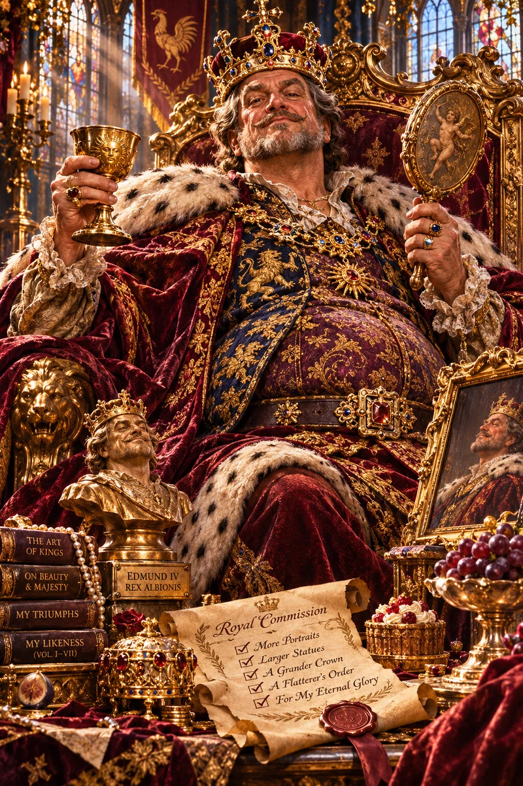
Royal household King Edmund IV King of Albion
Albion's magnificently self-important sovereign, collector of extravagant titles and guardian of the royal duck pond. His appetite for grandeur is rather greater than his enthusiasm for accountability.
Artwork: KAOSTWINS 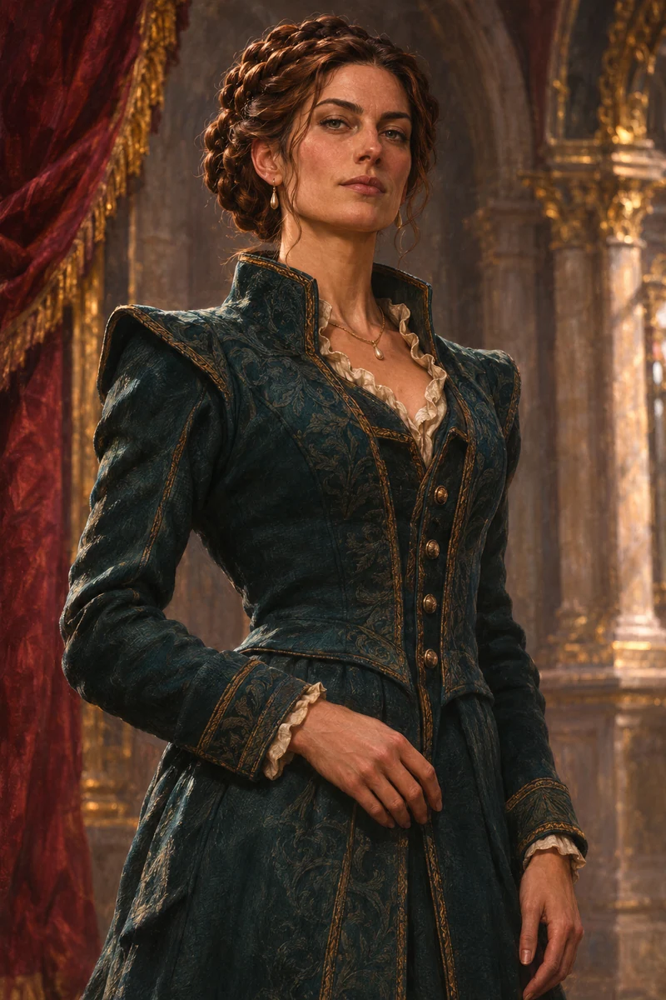
Royal household Princess Beatrice Princess of Albion
Formidable, composed and politically astute, Beatrice cultivates influence on her own terms. Her ambitions are entirely her own, and her wit can sound remarkably like a verdict.
Artwork: KAOSTWINS Royal household Prince Rupert Prince · Royal Enthusiast
A capable young prince with an alarming enthusiasm for Hero memorabilia, elaborate commissions and heroic adventures. Beneath the embarrassing fan-club antics lies an educated, affectionate diplomat.
Artwork: Stormfall 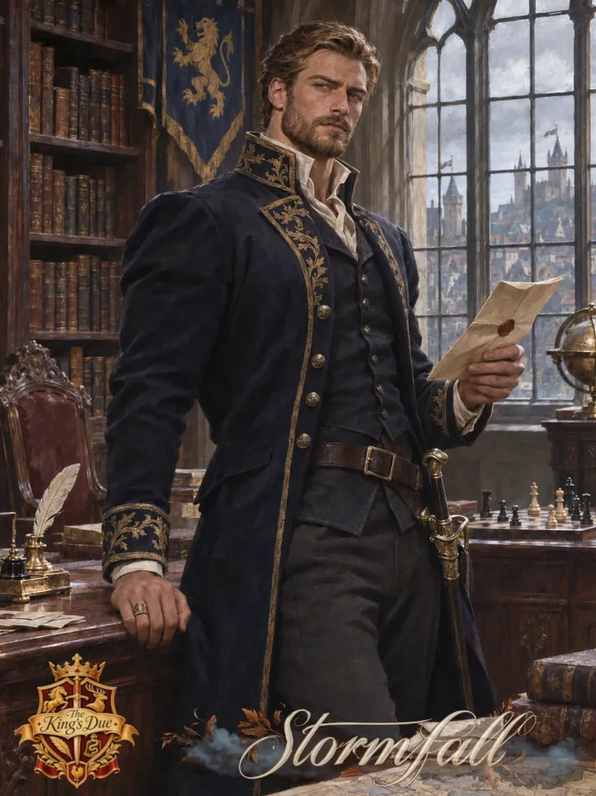
Royal household Crown Prince Frederick Heir to the throne
A disciplined royal officer and administrator determined to inherit a stable kingdom. Frederick's stern public manner, political intelligence and dry wit make him a formidable contrast to his father.
Artwork: Stormfall
Guild companions 8 characters Guild companions Abel Hodge Huntsman · Guild companion
A patient tracker who prefers the company of his dog to a crowded tavern. Reserved, resourceful and quietly funny, Abel knows the wilderness and the things that hunt within it.
Artwork: KAOSTWINS 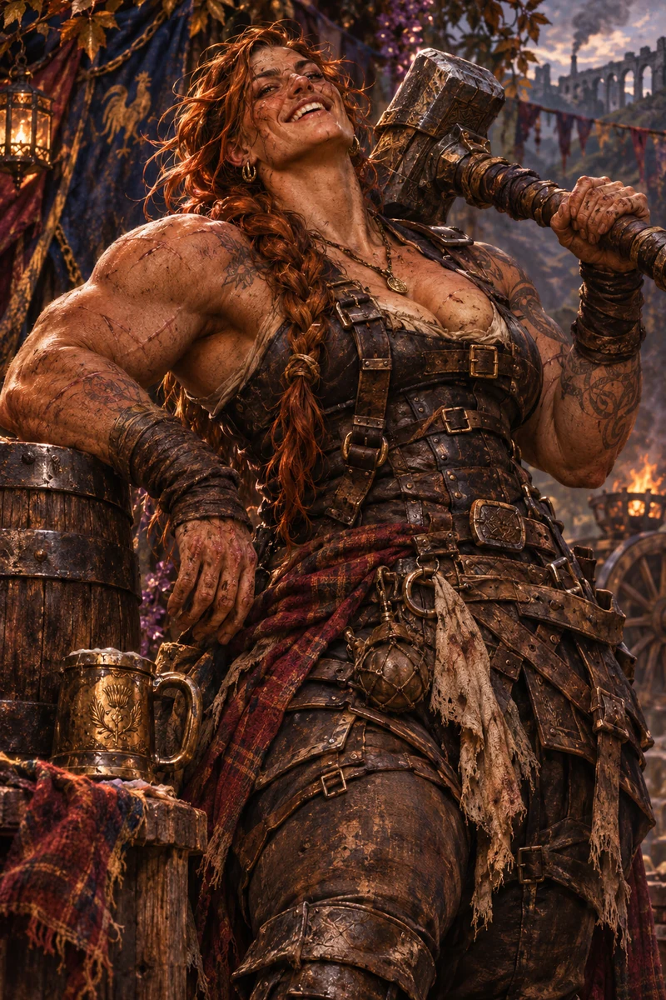
Guild companions Bridget Tallow Former gladiator · Guild companion
Known as Brick, this exuberant former gladiator lives for a worthy challenge, excellent ale and outrageous company. She uses her formidable strength to protect rather than intimidate.
Artwork: KAOSTWINS 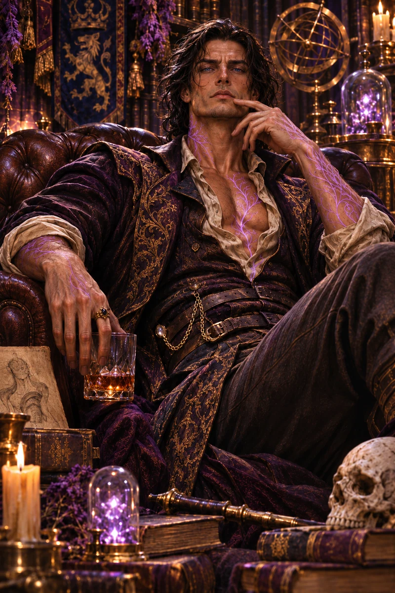
Guild companions Dr Ambrose Figg Will researcher · Guild companion
Brilliant, arrogant and dangerously curious, Figg approaches forbidden magic with the enthusiasm of a man who has not yet learned his lesson about cabbages.
Artwork: KAOSTWINS Guild companions Jem Rudge Highwayman · Guild companion
A shamelessly charming highwayman with quick wit, quicker hands and an unreliable relationship with the law. The Guild offered him an alternative to prison.
Artwork: KAOSTWINS Guild companions Mabel Pritchard Hexbreaker · Guild companion
An inventive circus performer and curse-breaker known as Bad Penny. Her theatrical humour conceals a keen empathy and an unusually entrepreneurial approach to supernatural problems.
Artwork: KAOSTWINS 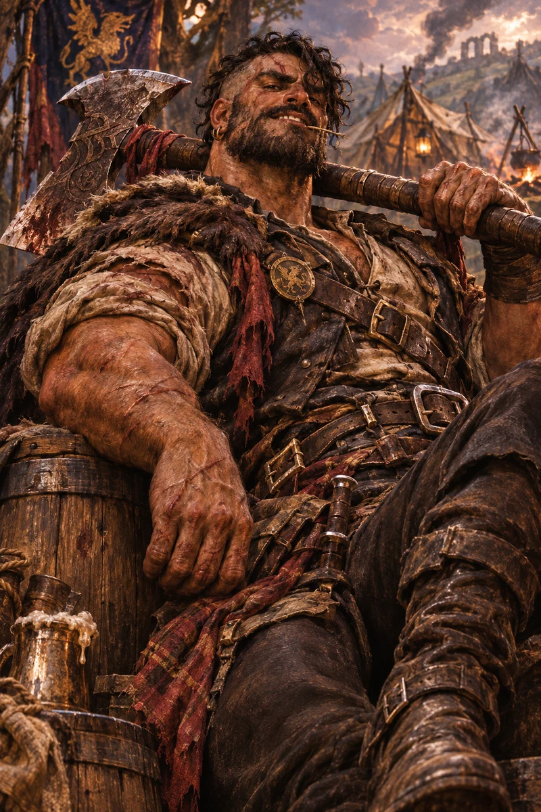
Guild companions Ned Bick Mercenary · Guild companion
A veteran sellsword from Bloodstone with a practical outlook, filthy humour and a surprising eye for other people's troubles. Knuckles believes a job worth doing is worth paying for.
Artwork: KAOSTWINS Guild companions Rook Fenwick Former Blackbird · Guild companion
A former bandit from Wraithmarsh finding his own path through the Guild. Rook's dry wit, unlikely friendships and tiny bat Mochi make him rather more complicated than his reputation.
Character credit: avenoire · Portrait supplied by avenoire 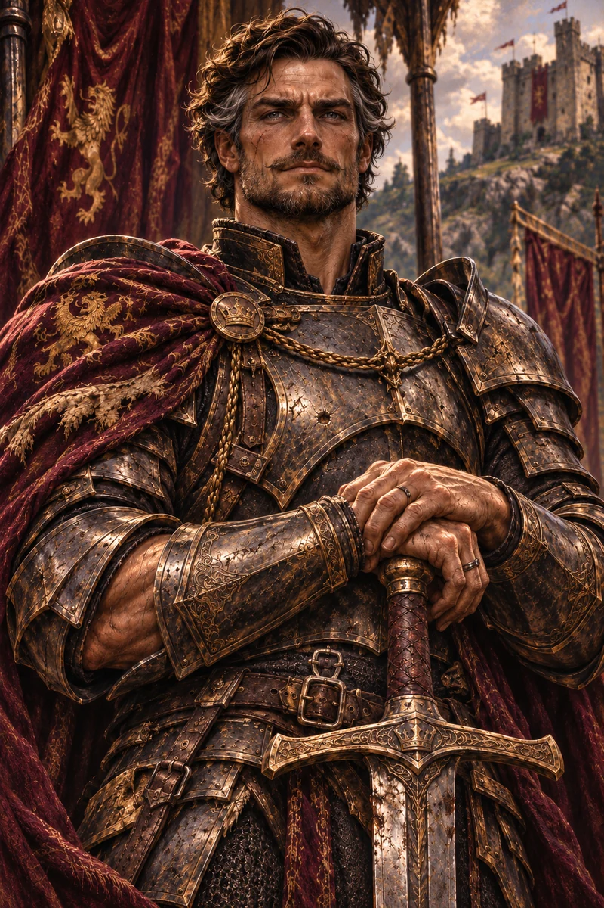
Guild companions Sir Roland Pym Disgraced knight · Guild companion
A disciplined knight who lost his standing after refusing a royal command. Proud, stubborn and nearly bankrupt, Roland retains his courtly manners and an exceptionally dry sense of humour.
Artwork: KAOSTWINS
Guild & tavern 4 characters Guild & tavern Arthur Pickles Proprietor · The Bent Sword
A cheerful tavernkeeper with a talent for questionable merchandise and valuable gossip. Arthur knows what every rumour costs and takes unreasonable pride in his establishment.
Artwork: KAOSTWINS Guild & tavern Reginald Pock Retired Hero · Guildmaster
A gruff veteran Hero who assigns contracts, oversees Guild ranks and has an autobiography of increasingly improbable proportions. Beneath the bluster, he watches out for new recruits.
Artwork: KAOSTWINS 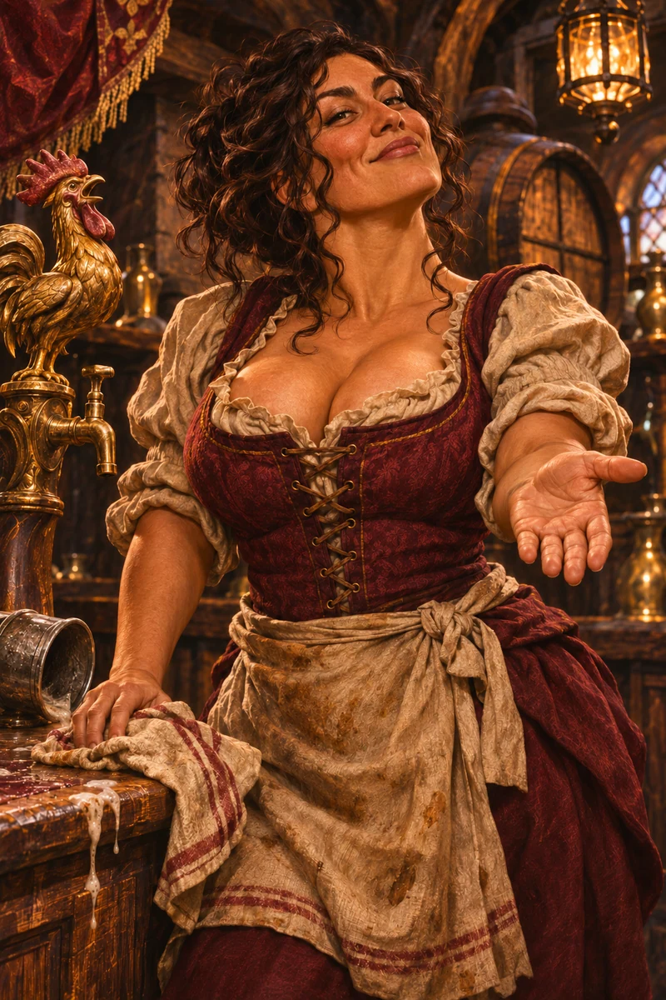
Guild & tavern Rosie Buxom Tavern attendant · The Bent Sword
A warm, perceptive and commercially savvy tavern attendant who remembers every tab and rather too many secrets. Rosie is saving for an establishment of her own.
Artwork: KAOSTWINS 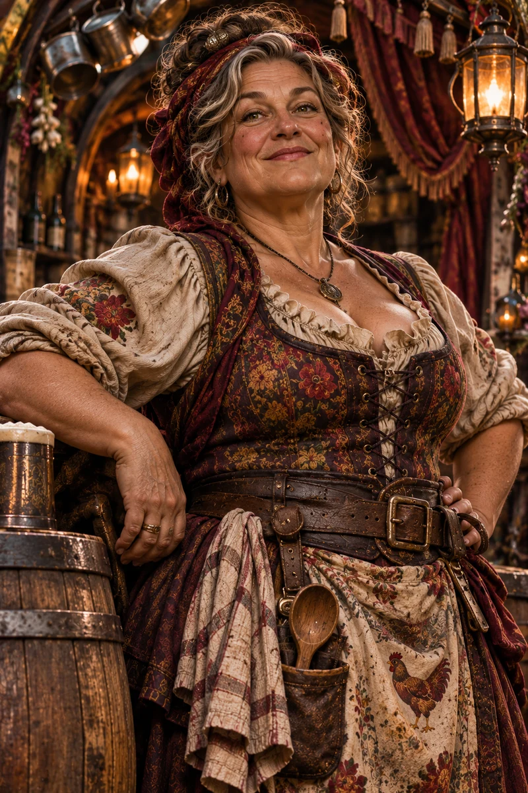
Guild & tavern Edith Pickles Travelling innkeeper
Arthur's older sister operates The Wandering Knob, a mobile pub offering food, shelter and gossip. Big Edie takes hospitality seriously and protects breakfast with admirable determination.
Artwork: KAOSTWINS
Bowerstone 6 characters 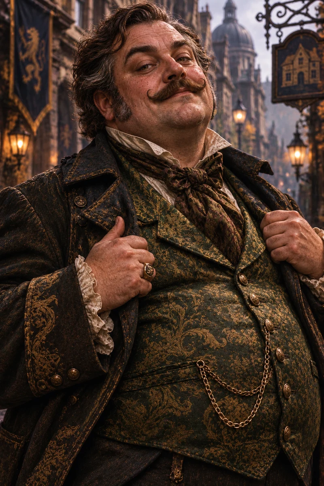
Bowerstone Barnaby Fumble Estate agent · Business broker
An enthusiastic broker of homes, land and businesses, with an alarming confidence in his own salesmanship. He is terrified of ghosts, which makes some of his property listings particularly awkward.
Artwork: KAOSTWINS Bowerstone Effie Knott Matchmaker · Gossip merchant
Elegant, perceptive and socially formidable, Effie knows the intricacies of Albion's romantic and financial affairs. A conversation with her rarely stays entirely confidential.
Artwork: KAOSTWINS Bowerstone Jack Gristle Inspector
An exhausted, dangerously competent investigator whose dry humour is almost as reliable as his sense of duty. Jack handles bounties, warrants and the less glamorous consequences of crime.
Artwork: KAOSTWINS Bowerstone Gage Fenwick Tattoo artist · Ink & Bastard
A sarcastic, inventive retired adventurer who now runs Bowerstone's Ink & Bastard. Rook's adoptive father is protective, creative and considerably more competent than he likes to admit.
Artwork: KAOSTWINS Bowerstone Lexi Koscheeva Merchant · Lemon & Twine
A creative, independent merchant in Bowerstone Market. Lexi's little luxuries are matched by her headstrong honesty, warmth and appreciation for the quiet corners of life.
Character credit: avenoire · Portrait supplied by avenoire Bowerstone Lucian Vell Principal broker · Velvet Hand
A sophisticated criminal financier who prefers contracts, influence and careful negotiations to unnecessary brutality. Lucian's impeccable manners conceal considerable ambition and a shrewd commercial mind.
Artwork: Stormfall
Bloodstone 3 characters Bloodstone Captain Bess Brine Harbour mistress
A formidable former pirate who now oversees Bloodstone's shipping and harbour taxes. Bess protects her harbour fiercely and knows precisely how much trouble a visiting aristocrat can afford.
Artwork: KAOSTWINS Bloodstone Vincent Clegg Smuggler
An infuriatingly charming smuggler who transports forbidden artefacts, correspondence and other awkward cargo. Vinnie has a gift for escaping trouble and occasionally surprises people with his loyalty.
Artwork: KAOSTWINS 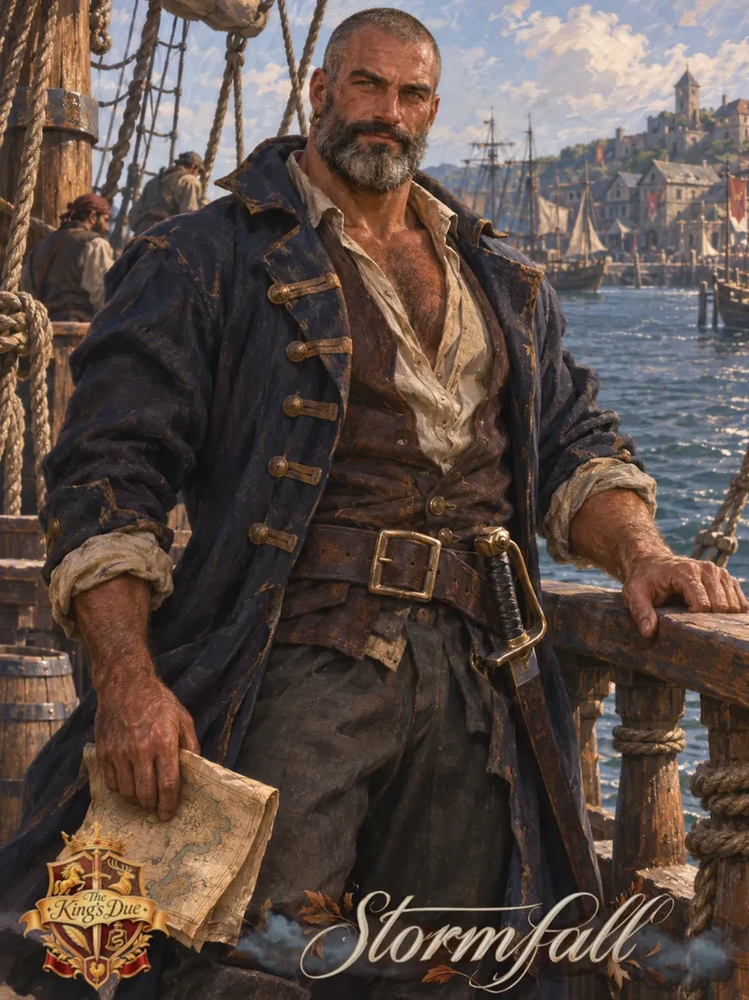
Bloodstone Captain Garrick Salt Captain · Salty Bastards
The independent captain of the Salty Bastards, operating beyond the Guild's authority. Garrick belongs to Albion's dangerous maritime world and pursues his own interests.
Artwork: Stormfall
The Cock & Crown 5 characters 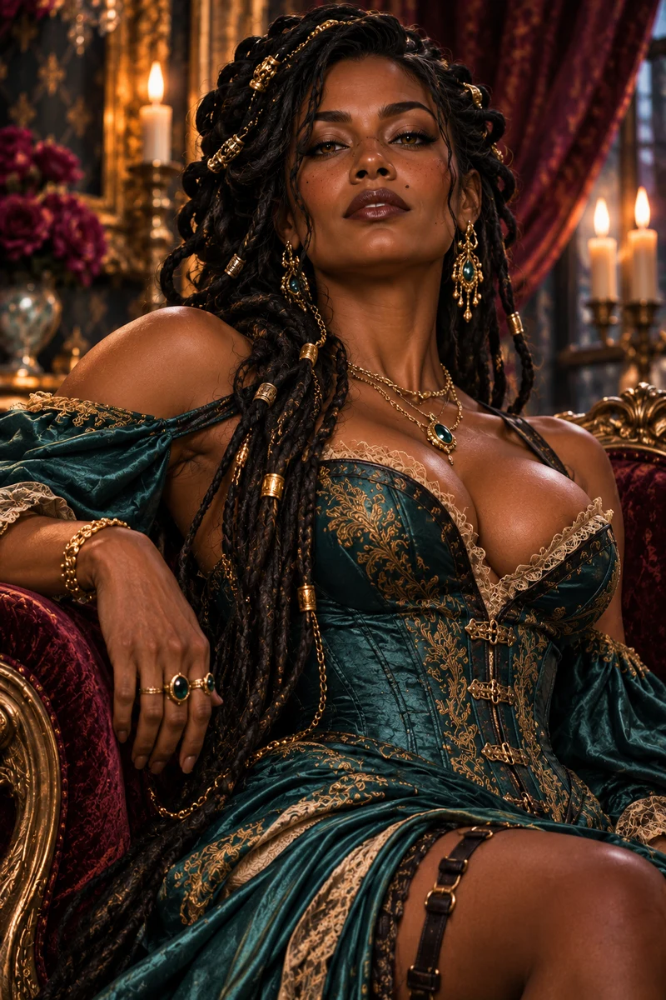
The Cock & Crown Vivienne Thistle Courtesan · The Cock & Crown
Warm, wickedly funny and shrewd, Vivienne is an independent professional and an informal advocate for her colleagues. She values autonomy and has little patience for entitlement.
Artwork: KAOSTWINS The Cock & Crown Percy Plum Proprietor · The Cock & Crown
Impeccably mannered, fiercely protective and razor-witted, Percy runs Bloodstone's famous establishment as a business and chosen-family sanctuary. He knows the value of information and fair terms.
Artwork: KAOSTWINS The Cock & Crown Hector Hogg Courtesan · Former arena champion
A quietly formidable former champion who now works at the Cock & Crown. Hector enjoys poetry, whisky and tenderness without feeling any need to apologise for his strength.
Artwork: KAOSTWINS The Cock & Crown Montgomery Fizz Courtesan · The Cock & Crown
Glamorous, affectionate and unapologetically himself, Monty enjoys elegant clothes, gossip and skincare. His sharp social instincts are often rather more useful than his aristocratic origins.
Artwork: KAOSTWINS The Cock & Crown Sebastian Coppers Courtesan · The Cock & Crown
Known as Bash, Sebastian is the Cock & Crown's quietly captivating courtesan, with a taste for black lace, silver jewellery and midnight conversation. An astute listener with a wickedly dry wit, he notices what others overlook and has a knack for saying precisely what needs to be said. Beneath his reserved exterior is a fiercely independent man who values freedom and the family he has found in Bloodstone.
Artwork: KAOSTWINS
Oakvale 3 characters Oakvale Hettie Crump Parish chairwoman
Oakvale's formidable organiser rules through gossip, baking and a wooden spoon. Practical, nosy and unexpectedly generous, Hettie keeps her village fed and thoroughly informed.
Artwork: KAOSTWINS Oakvale Merrick Nettle Village witch · Herbalist
An eccentric herbalist and alchemist whose advice is sought by people who would never publicly admit it. Merrick listens closely to the natural world, especially when it appears to answer.
Artwork: KAOSTWINS Oakvale Tom Ploughman Farmer
A hardworking, grounded farmer with a blunt manner and a warmer heart than his reserve suggests. Oakvale's persistent matchmaking campaign has become something of a local institution.
Artwork: KAOSTWINS
Brightwall 3 characters 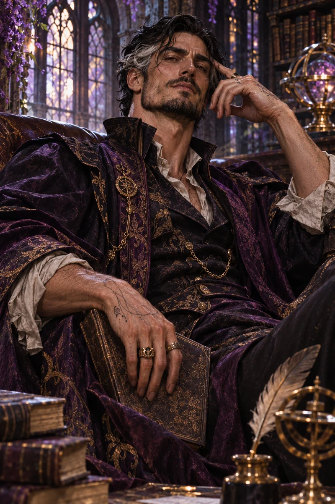
Brightwall Professor Ambrose Bletchley Professor of Forbidden Will
A distinguished and exacting scholar whose intellectual standards are matched only by his sarcasm. Bletchley takes magical research seriously and has little patience for academic theatrics.
Artwork: KAOSTWINS Brightwall Prue Quill Grand Librarian
The elegant, formidable keeper of Brightwall's Infinite Library. Prue remembers an extraordinary amount, demands impeccable library etiquette and is not impressed by royal titles.
Artwork: KAOSTWINS Brightwall Winnie Coggs Inventor
A brilliant, energetic inventor whose workshop has survived a frankly remarkable number of fires. Winnie makes magical devices and experimental equipment with more confidence than caution.
Artwork: KAOSTWINS
Knothole Glade 4 characters Knothole Glade Freya Pritch Master weaponsmith
An independent, outspoken weaponsmith and expert in ancient metals. Freya takes her craft and promises seriously, and her famous nickname has a particularly unusual origin.
Artwork: KAOSTWINS Knothole Glade Basil Bellow Crucible announcer
The exuberant voice of the Crucible, Basil can turn an ordinary announcement into an arena spectacle. Beneath the theatrics, he takes competitor safety seriously.
Artwork: KAOSTWINS Knothole Glade Magnus Stump Chieftain of Knothole Glade
An immense veteran warrior whose courage is matched by his compassion. Magnus protects his community, cries at weddings and takes his miniature porcelain teacup collection extremely seriously.
Artwork: Stormfall Knothole Glade Duncan Ramsbottom Arena champion · The Crucible
The Crucible's charismatic champion, known as Bull, turns even ordinary chores into competitions. His spectacular confidence is supported by genuine tactical intelligence and an affectionate nature.
Artwork: Stormfall
Wraithmarsh 5 characters Wraithmarsh Delilah Bell Medium
Wraithmarsh's theatrical, confident medium handles séances, curses and the occasional supernatural marital dispute. Her flamboyant humour hides a perceptive, compassionate nature.
Artwork: KAOSTWINS Wraithmarsh Mortimer Graves Reverend · Undertaker
A dry, discreet reverend and undertaker who treats the living and dead with equal courtesy. Mortimer is a steady presence in Wraithmarsh, where death is seldom the end of a conversation.
Artwork: KAOSTWINS 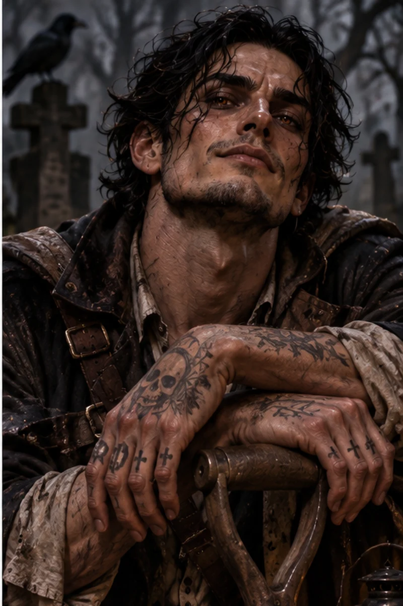
Wraithmarsh Silvester Mould Grave robber
A resourceful and shamelessly charming entrepreneur in the field of previously owned antiquities. Sly has a curious habit of acquiring objects whose former owners follow him home.
Artwork: KAOSTWINS 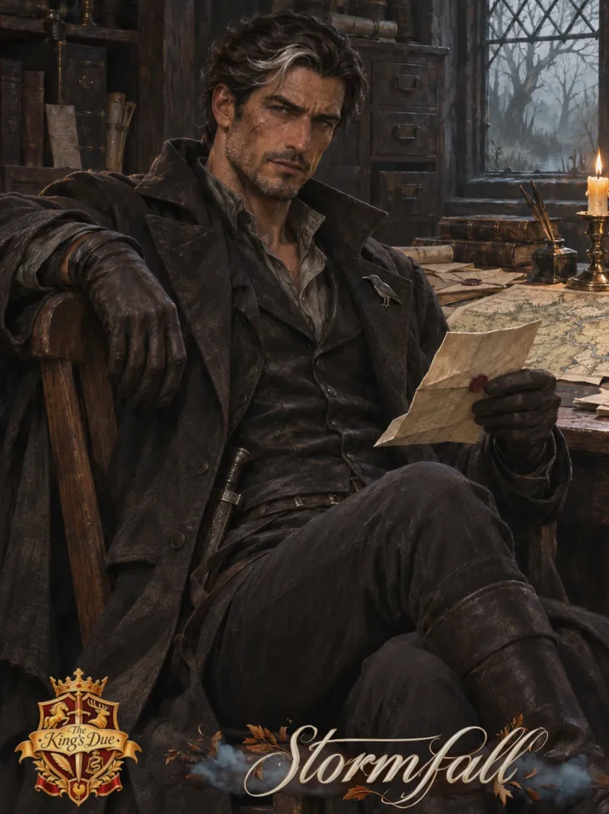
Wraithmarsh Gideon Crowhurst Leader · Blackbirds
A patient, guarded strategist based in Wraithmarsh. Gideon values reliable information, quiet authority and well-made locks; his dry wit is considerably less innocent than his taste in mystery novels.
Artwork: Stormfall Wraithmarsh Father Malachi Blackett Priest of Skorm
An articulate priest and scholar of forbidden theology based in Wraithmarsh. Malachi delights in challenging comfortable moral assumptions, examining ancient knowledge and asking uncomfortable questions.
Artwork: Stormfall
Religious figures 4 characters Religious figures Archbishop Bartholomew Bunting Archbishop of Avo
The polished presiding figure of the Holy Church of Avo. Bunting officiates at major ceremonies and has a marked appreciation for both public virtue and the finer things in life.
Artwork: KAOSTWINS Religious figures Sister Agnes Pickthorn Wandering priestess · Old Faith
An earthy, formidable priestess whose compassion comes with a generous helping of irreverence. Ancient spirits and ordinary villagers alike may find themselves on the receiving end of her scolding.
Artwork: KAOSTWINS 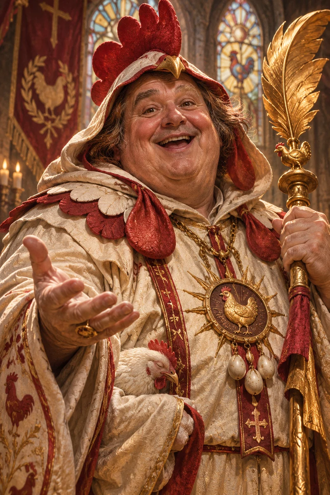
Religious figures Brother Percival Peck Head of the Holy Chicken order
The earnest, theatrical Supreme Cock takes poultry-related theology with extraordinary seriousness. He is unexpectedly gentle with animals and regards chicken disputes as spiritual emergencies.
Artwork: KAOSTWINS Religious figures Mother Scarlet Ancient Oracle · Narrator
A crimson-robed oracle whose guidance arrives through dreams, visions and meaningful turning points. Sardonic, precise and solemn when necessary, she leaves the Hero's choices to the Hero.
Artwork: KAOSTWINS
Spectral residents 4 characters 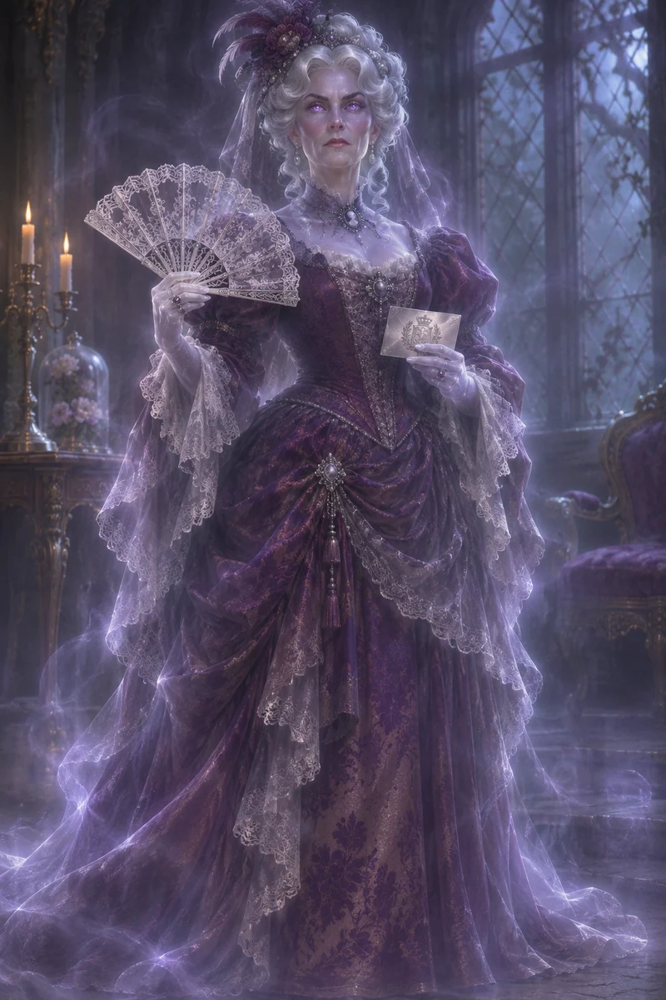
Spectral residents Lady Prudence Spectral society matron
An elegantly dressed ghost with a taste for scandal and a long-standing marital grievance. Lady Prudence is sharp, socially observant and surprisingly capable of compassion.
Artwork: KAOSTWINS 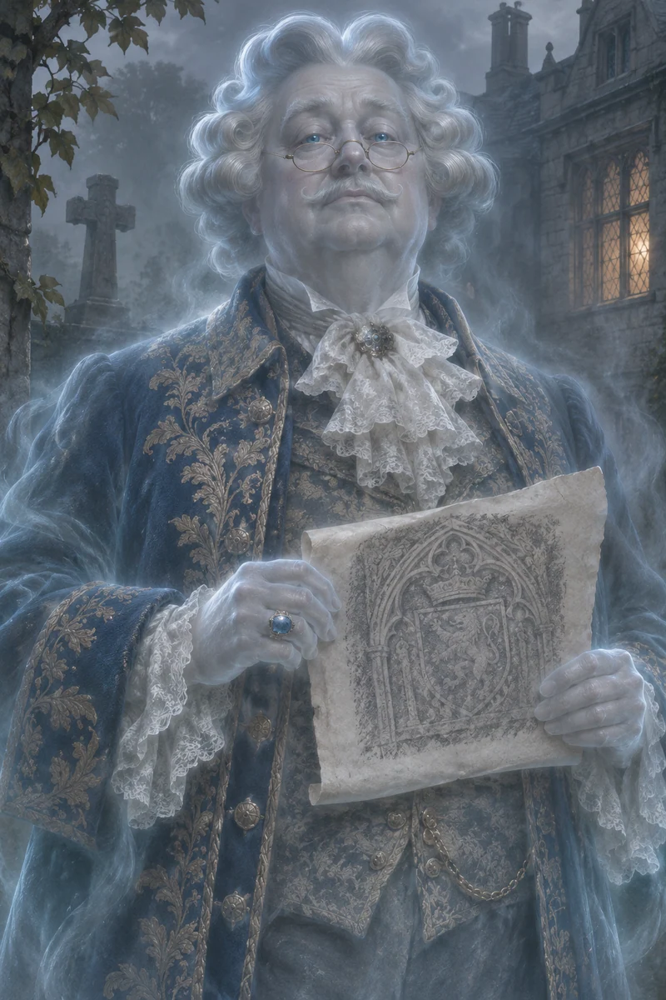
Spectral residents Lord Humphrey Bottomley Petitioning aristocratic ghost
A pompous, pedantic spirit who considers good manners civilisation's last defence. His endless objections conceal a rather sentimental streak.
Artwork: KAOSTWINS 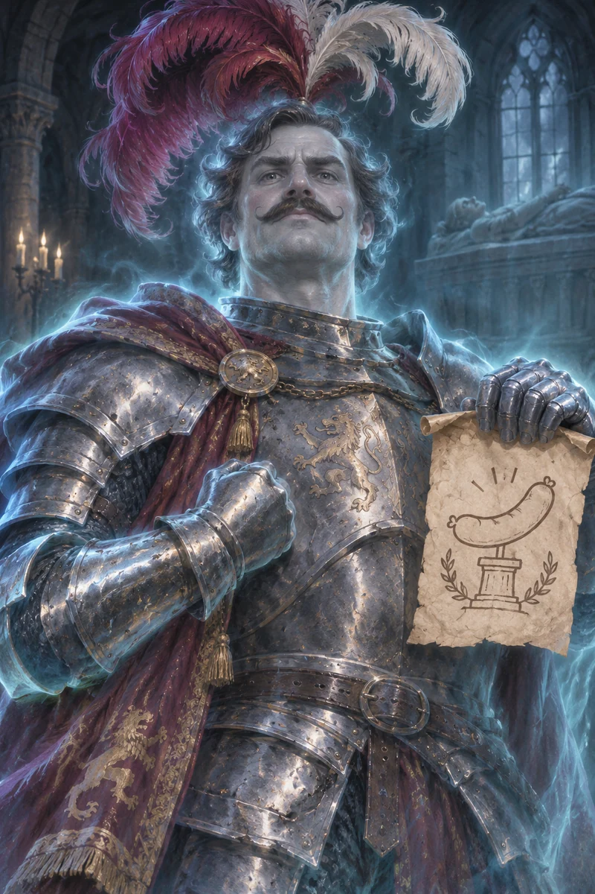
Spectral residents Sir Cedric the Unvanquished Spectral knight
A deceased knight determined to improve his own heroic biography. Grandiose, competitive and fundamentally decent, Cedric is considerably less good at accepting embarrassment.
Artwork: KAOSTWINS 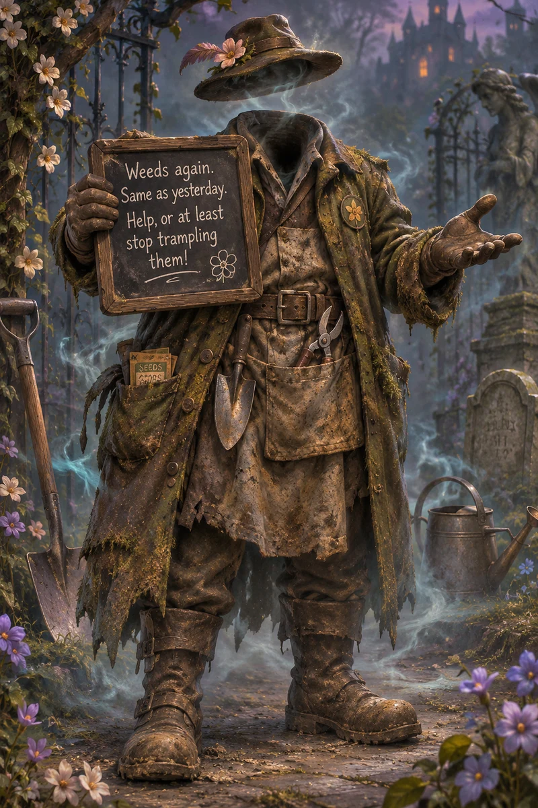
Spectral residents The Headless Groundskeeper Spectral caretaker
A patient, practical and perpetually inconvenienced groundskeeper who communicates through gestures and a chalk slate. His gardening standards remain intact, unlike his head.
Artwork: KAOSTWINS
Independent travellers 6 characters Independent travellers Ronan Levallan Wandering traveller
An imposing wandering traveller and Zea's twin brother. His quiet presence and dry humour contrast with his sister's boundless enthusiasm; their appearances remain rare encounters.
Artwork: KAOSTWINS Independent travellers Zea Levallan Wandering bard
A tiny, loud wandering bard with a talent for attracting attention and causing memorable interruptions. Zea travels with her twin brother Ronan and is a rare visitor to Albion's adventures.
Artwork: KAOSTWINS 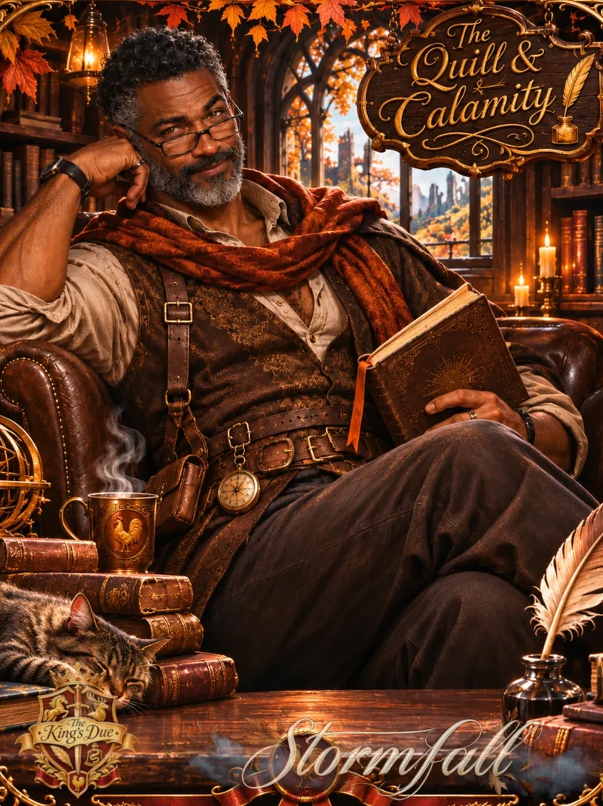
Independent travellers Ciel Creative acquaintance
A fellow creative associated with the Quill & Calamity, known for theatrical mock trials and a very serious clipboard. Ciel appreciates questionable ideas and the company of other artists.
Artwork: Stormfall Independent travellers Conrad Rookwood Leader · Rookwood Company
An independent bandit king based at Rookwood Hold. Conrad combines formidable physical presence, territorial ambition and practical leadership to maintain his company's position.
Artwork: Stormfall 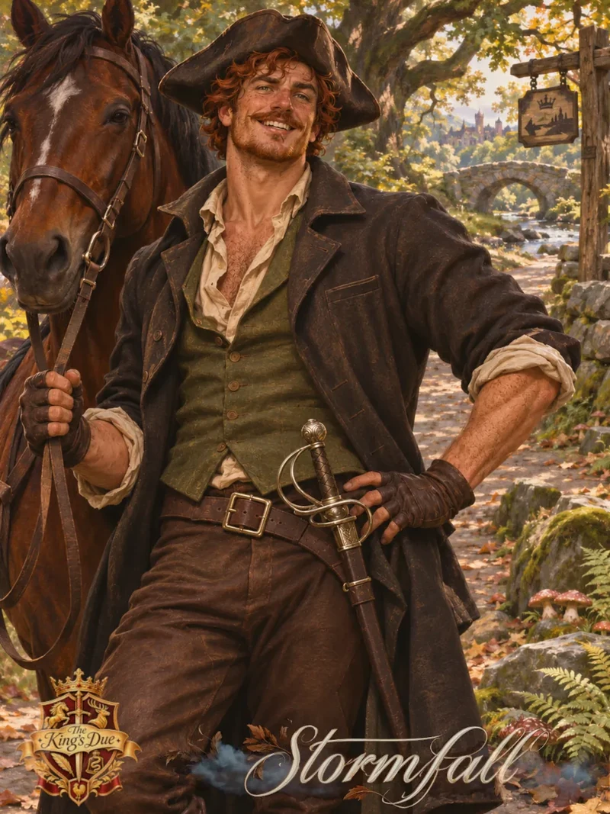
Independent travellers Robin Fawkes Highwayman · Independent traveller
An adventurous, charming highwayman who travels with his beloved horse Gunpowder. Robin enjoys freedom, gambling and profitable roads rather more than permanent attachments to criminal organisations.
Artwork: Stormfall 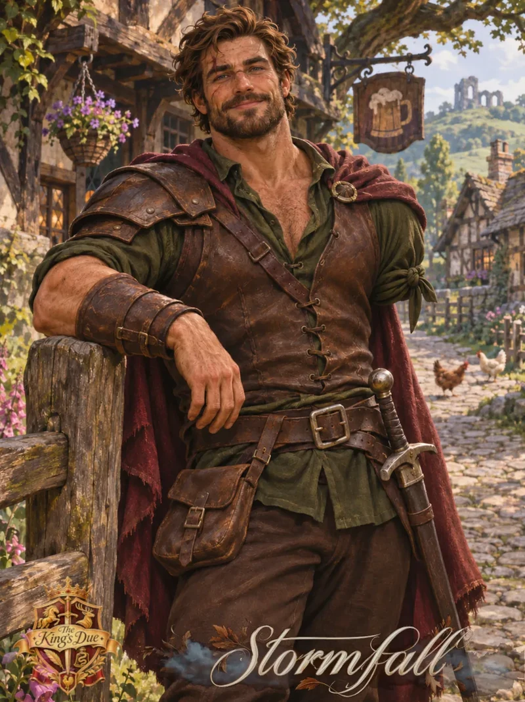
Independent travellers Walter Goodwin Independent Hero · Monster hunter
A veteran adventurer who returned to his profession after losing his left arm protecting villagers. Walter is capable, practical and warm, with a strong sense of responsibility and an independent life.
Artwork: Stormfall
Other residents 5 characters Other residents Crispin Tithebottom Chief Tax Collector
The implacably meticulous head of Albion's Revenue Service. Crispin has a form for nearly everything and takes particular pride in the proper application of procedure.
Artwork: KAOSTWINS 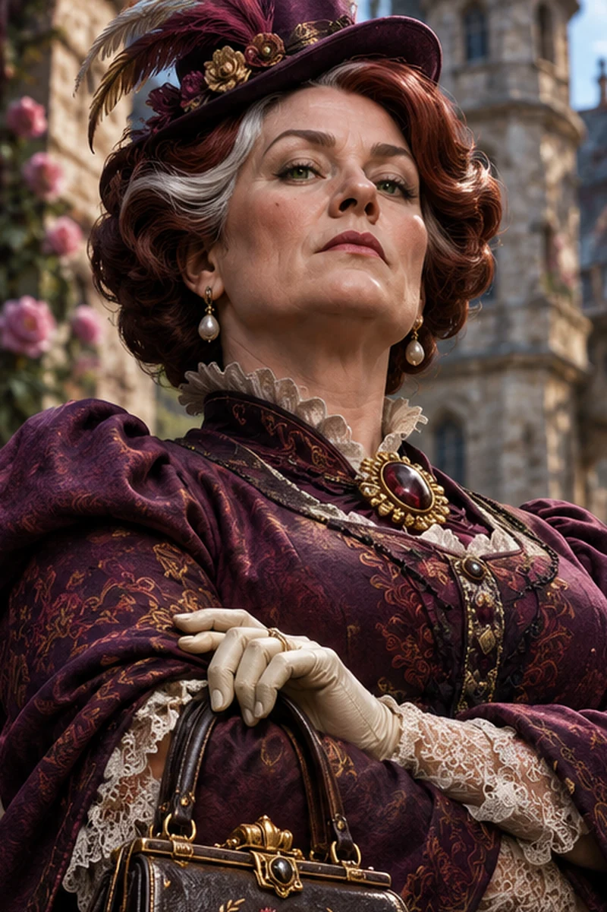
Other residents Mrs Constance Clench Chairwoman · Concerned Wives' Association
An outspoken, organised champion of respectable society with a formidable handbag. Constance's judgements may be swift, but credible evidence can persuade her to reconsider.
Artwork: KAOSTWINS Other residents Tabitha Inkblot Editor · The Daily Bollocks
Ferociously curious and shameless about a good headline, Tabitha runs Albion's notoriously questionable newspaper. A genuinely endangered source may find her surprisingly protective.
Artwork: KAOSTWINS 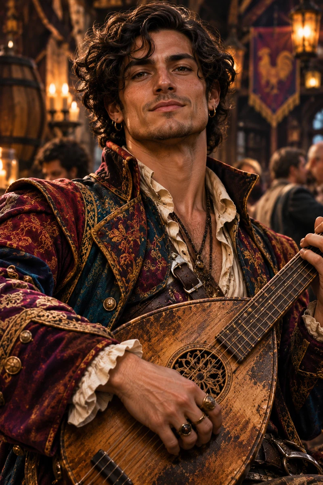
Other residents Barnabus Trotter Itinerant bard
A travelling musician who turns the adventures of Albion into memorable ballads. Barnabus can make a Hero famous, infamous or in desperate need of a correction.
Artwork: KAOSTWINS 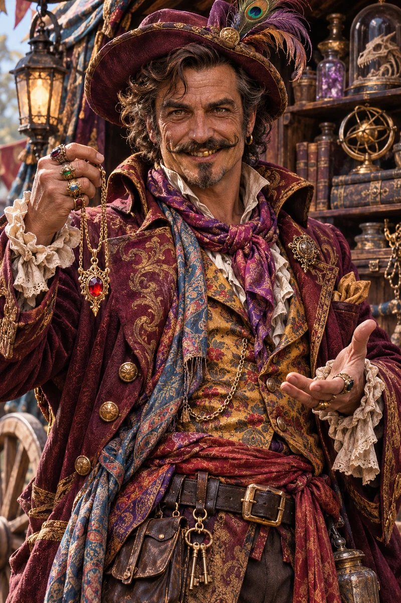
Other residents Horatio Cobb Itinerant merchant
Known as Honest Harry, this enthusiastic trader offers suspicious goods alongside occasional genuine discoveries. His stock changes as he travels, and his sales pitch is rarely modest.
Artwork: KAOSTWINS
Blackroot expansion 9 characters Blackroot expansion Godfrey Grimshaw The Beast of Blackroot
A cultivated former Hero and notorious White Balverine who rules the Blackroot Pack from Grimshaw Lodge. His intellect, refined tastes and deliberate cruelty make him an exceptionally dangerous adversary.
Artwork: Stormfall Blackroot expansion Alaric Vane Second-in-command · Blackroot Pack
A former mercenary and experienced Balverine who oversees the pack's patrols and disputes. Alaric is disciplined, ambitious and loyal to the hierarchy for decidedly practical reasons.
Artwork: Stormfall 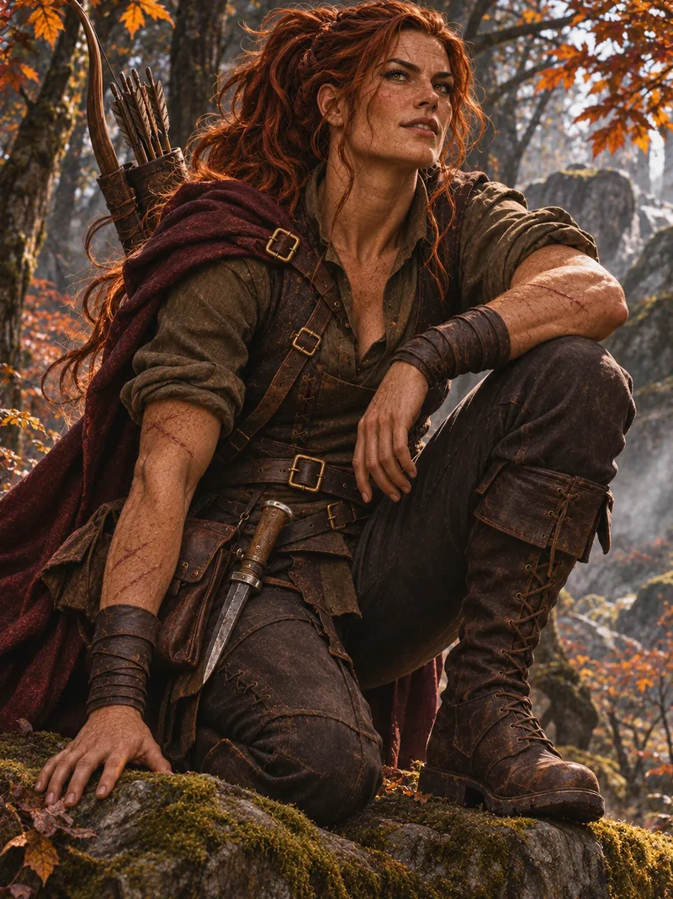
Blackroot expansion Hester The Red Huntress · Blackroot Pack
A formidable tracker and former wilderness guide with a reddish Balverine form. Hester is competitive, independent and territorial, with her own ambitions beyond the pack's leadership.
Artwork: Stormfall 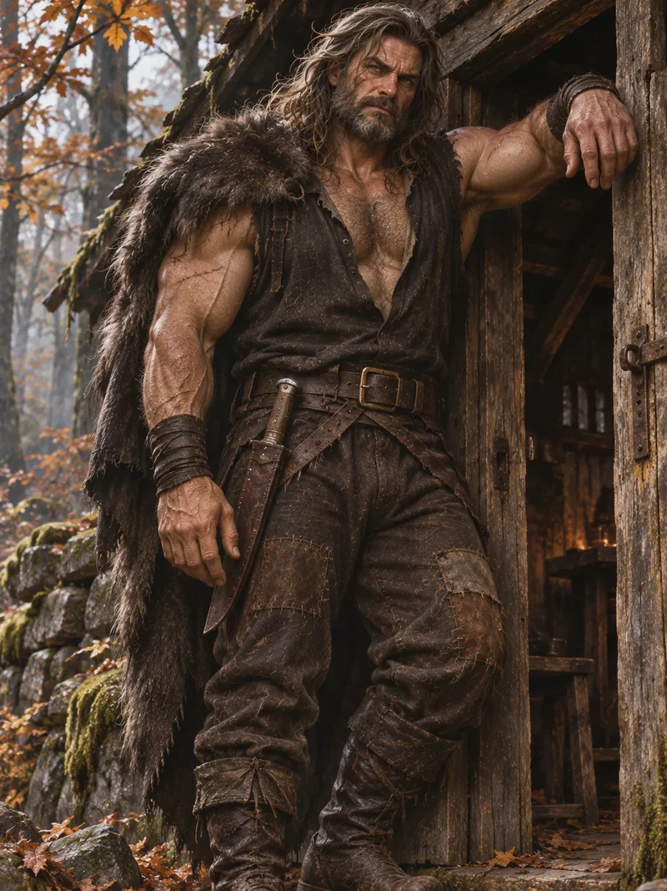
Blackroot expansion Osric The Ashen · Blackroot Pack
A former poacher whose ash-grey Balverine form and unpredictable transformations make him a dangerous presence. Osric responds to established authority but retains his own preferences and judgement.
Artwork: Stormfall 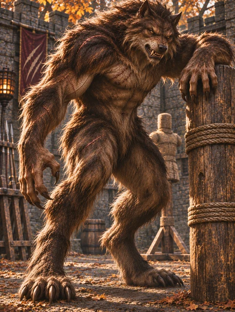
Blackroot expansion Garran The Broken Jaw · Blackroot Pack
An impulsive former bandit who embraced his Balverine condition. Garran seeks to distinguish himself through strength and ambition, though his judgement has not yet caught up with his enthusiasm.
Artwork: Stormfall Blackroot expansion Dr. Octavius Sallow Physician · Grimshaw Lodge
A distinguished physician who left conventional practice to study supernatural physiology. Octavius provides medical expertise to the lodge and pursues his research with clinical detachment.
Artwork: Stormfall 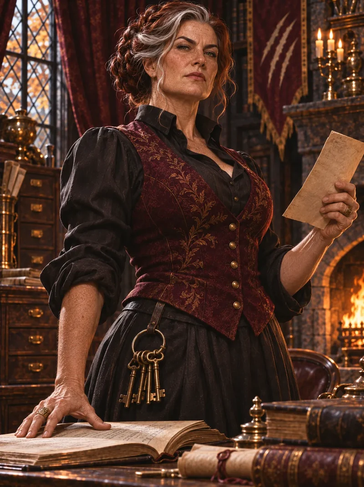
Blackroot expansion Beatrix Gallows Estate administrator · Grimshaw Lodge
The calculating administrator responsible for the lodge's finances, supplies and staff. Beatrix's meticulous accounts and practical intelligence help keep a deeply unconventional household functioning.
Artwork: Stormfall Blackroot expansion Martha Blackthorn Cook · Grimshaw Lodge
An accomplished cook and former innkeeper who oversees the lodge's kitchens and provisions. Martha is outspoken, practical and uncompromising about her culinary standards.
Artwork: Stormfall Blackroot expansion Silas Crowther Gamesmaster · Grimshaw Lodge
A charismatic organiser of underground competitions and private blood sports. Silas combines theatrical flair and commercial ambition in service of the lodge's dangerous entertainments.
Artwork: Stormfall No matching characters.